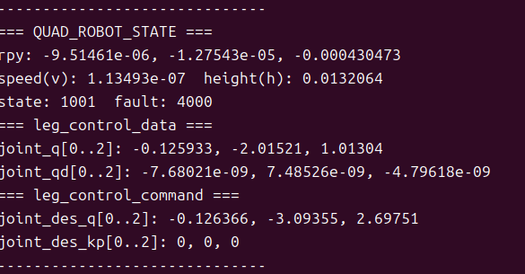

4.4 Процесс чтения состояния через SDK¶
Назначение¶
Этот раздел объясняет, как читать состояние робота через SDK для отображения на верхнем компьютере, бизнес-логики и отладки суставов.
Предварительные условия¶
- Контроллер запущен.
- SDK собран.
- Канал
QUAD_ROBOT_STATEсоответствует конфигурации контроллера.
Пример программы¶
Исходный файл примера чтения состояния:
yobotics_sdk/example/robot_state_client.cpp
Собранная программа:
yobotics_sdk/build/yobot_robot_state_client
Запуск¶
cd yobotics_sdk/build
./yobot_robot_state_client
Указать URL LCM:
export YOBOTICS_LCM_URL="udpm://239.255.76.67:7667?ttl=255"
./yobot_robot_state_client

Доступное для чтения состояние¶
| Состояние | Назначение |
|---|---|
| Текущий режим управления | Определить, находится ли робот в DAMP, RECOVERY, RL или DEVELOPMENT |
| Скорость и ориентация | Отображение на верхнем компьютере и оценка состояния движения |
| Обратная связь управления | Подтвердить, получает ли контроллер команды SDK |
| Канал состояния суставов | Отладка низкоуровневого положения, скорости и момента суставов |
Критерии успешного выполнения¶
- Программа непрерывно выводит состояние.
- Режим, скорость, ориентация и другие поля меняются вместе с состоянием контроллера.
QUAD_ROBOT_STATEвиден в мониторинге LCM.
Устранение неполадок¶
| Симптом | Действие |
|---|---|
| Нет вывода | Проверьте, запущен ли контроллер и совпадает ли URL LCM |
| Частота состояния очень низкая | Проверьте сеть и загрузку CPU |
| Значения полей не меняются | Проверьте, выполнена ли подписка на правильный канал |